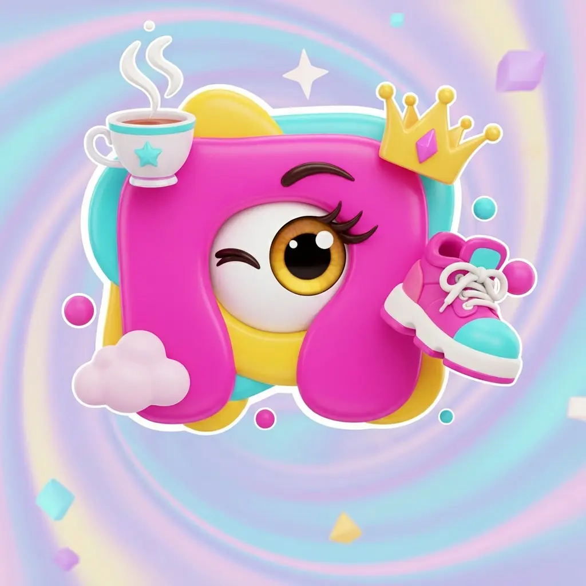
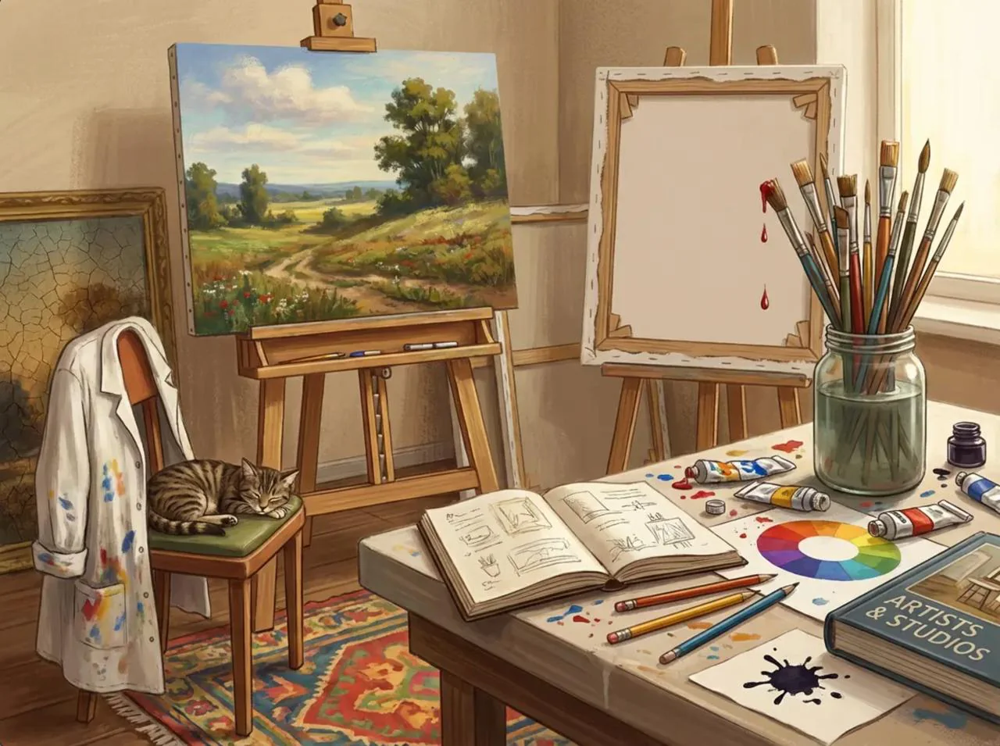

01
Рассмотрите картинку
Здесь целый маленький мир. Предметы, животные и детали — находки могут прятаться где угодно.

Найди на буквуИГРА НА ВНИМАТЕЛЬНОСТЬ И ВООБРАЖЕНИЕ
Кот, кисть, карандаш… А что ещё? Находите слова на одну букву в картинке, полной деталей. Две минуты, которые хочется повторить.
Бесплатно · Без регистрации · Прямо здесь

01 — ПРАВИЛА ПРОЩЕ, ЧЕМ КАЖЕТСЯ
Всё нужное уже на картинке. Осталось присмотреться.
Здесь целый маленький мир. Предметы, животные и детали — находки могут прятаться где угодно.
Называйте то, что видите: только существительные. Например, на «К» — кот, кисть, карандаш.
Записывайте слова, а потом сравните находки. Один предмет — одно очко, даже если у него несколько названий.
02 — МАЛЕНЬКАЯ ИГРА ПРЯМО СЕЙЧАС
Две картинки из нашей коллекции. Выберите сцену и проверьте свою наблюдательность.
Нажмите «Начать», рассмотрите картинку и записывайте слова. Можно вводить сразу несколько через пробел или запятую.
Вводите существительные на нужную букву. Нажмите Enter, чтобы добавить.
У каждой картинки больше одного прочтения. Загляните в примеры и попробуйте найти ещё.
Загружаем картинку…
Здесь появятся ваши находки
Это демо с заданной буквой и подготовленным списком ответов. Если вашего слова нет в списке, это не значит, что вы ошиблись. В компании спорные находки обсуждают вместе.
При смене языка начинается новый раунд.
03 — ПОВОД СОБРАТЬСЯ
Достаньте картинку, раздайте бумагу и включите таймер. Остальное — любопытство, азарт и «Как я это не заметил?!».
Смешайте команды за столами и дайте гостям общий повод познакомиться. А в персональную картинку спрячьте историю пары.
Для тех, кто только знакомитсяДобавьте в игру любимые места, увлечения и шутки именинника. Картинка станет и развлечением, и памятным подарком.
В центре — ваша историяИграйте как в настолку: каждый пишет свои слова, потом сравнивайте ответы и обсуждайте самые неожиданные находки.
Бумага, ручка и немного азартаИщите вместе с детьми, устройте разминку на встрече коллег или потренируйте английские слова. Букву и темп выбираете вы.
За одним столом или экраном04 — КАРТИНКА, В КОТОРОЙ ЕСТЬ ВЫ
Дом, где вы собираетесь. Любимый пёс. Поездка, о которой вспоминаете до сих пор. Мы превратим знакомые детали в персональную картинку для игры.
Расскажите, для кого игра, какой повод и что важно спрятать в сюжете. Детали и стоимость обсудим лично.
Для демо достаточно браузера. Полная игра живёт в Telegram: откройте бота и отправьте /play.
Ищите существительные, обозначающие то, что видно на картинке. Имена собственные не считаются, а разные названия одного предмета дают одно очко. В демо используется небольшой подготовленный список.
Конечно, особенно в компании. В демо буква задана, чтобы проще освоиться. В Telegram вы выбираете её своими ответами — в результат идёт буква с наибольшим числом уникальных слов.
ПРОДОЛЖЕНИЕ — В TELEGRAM
Новые картинки, находки других игроков и ещё один повод присмотреться к деталям. Присоединяйтесь к нашей игре.
Играть в Telegram
{kind=link}